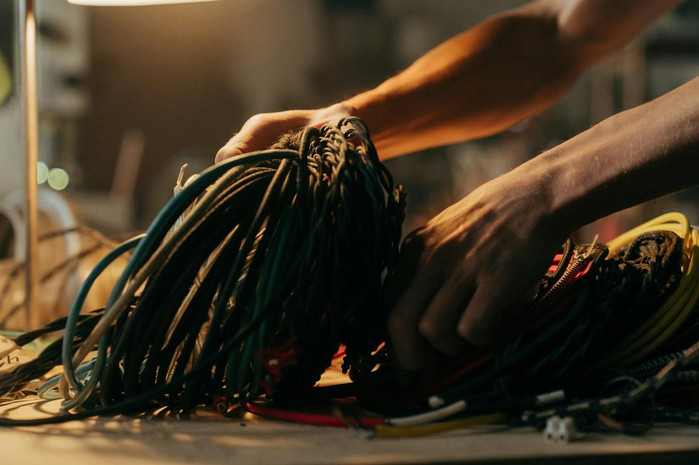
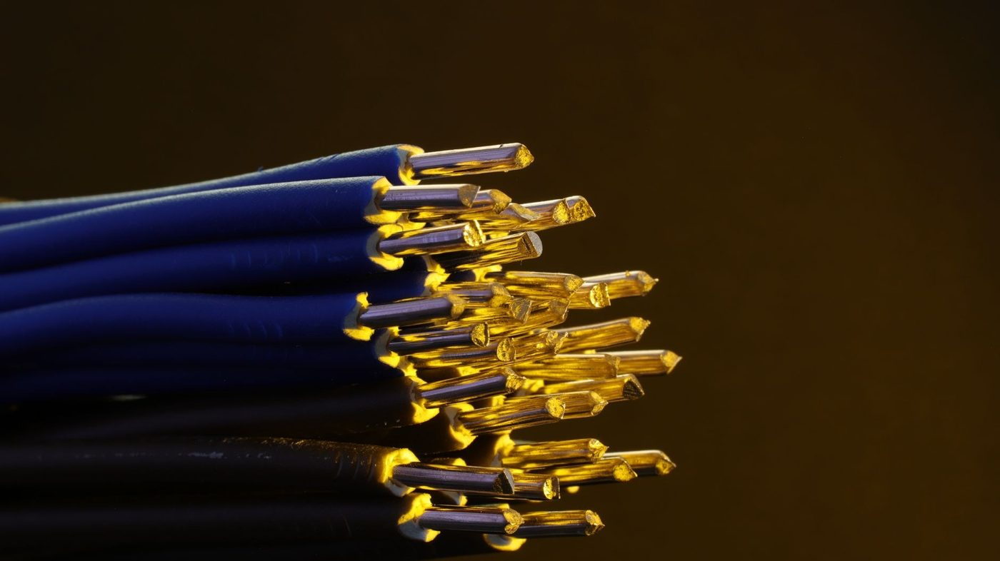
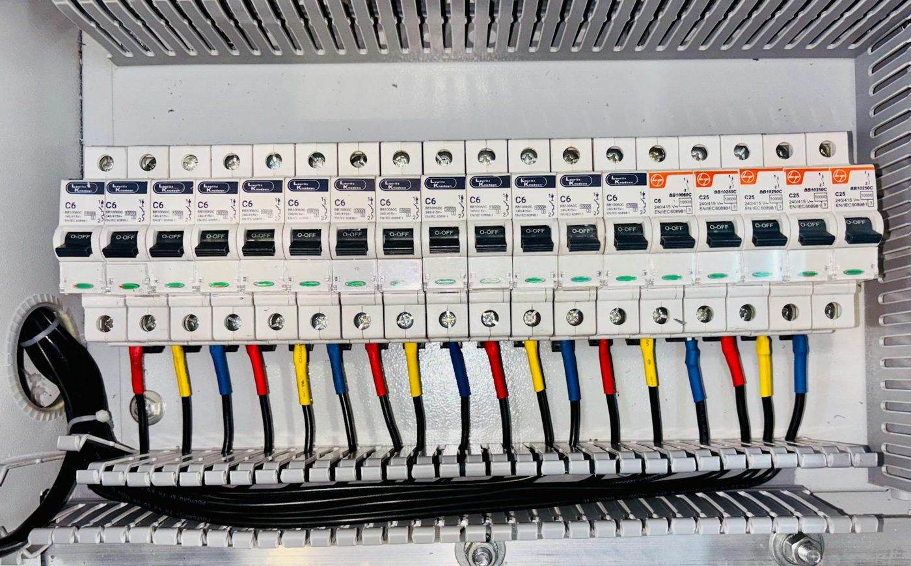
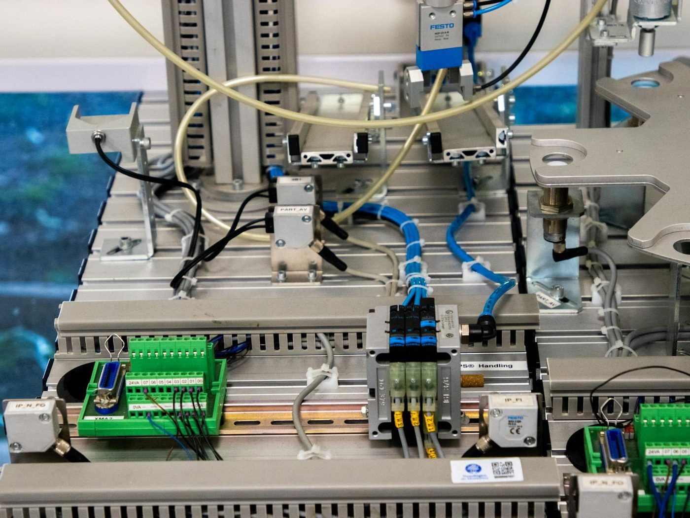

Kosten werden planbar
Feste Stücklisten, klare Aufmaße — kein Überraschungs-Posten.
Kabelkonfektion · Kabelbäume · Elektroinstallation
Kabelbäume für Automotive und Landmaschinentechnik — entwickelt für hohe Beanspruchung in rauer Umgebung. Vom Prototyp bis zur Serie, just-in-time. Aus Calberlah, seit 1998.
Von Beginn an spezialisiert auf die Entwicklung und Fertigung von Kabelbäumen für den Automotive-Bereich.
Umzug in eine eigene Produktion in Calberlah — Schwerpunkt Landmaschinentechnik, mit Erfahrung für hohe Beanspruchung in rauer Umgebung.
Zusätzlich erwirkte Zulassung zum Elektroinstallationshandwerk — Konfektion und Installation aus einer Hand.
Spezialisten-Knowhow in der Kabelfertigung — von der idealen Steckverbindung bis zur fertigen Baugruppe.

Wir finden die ideale Steckverbindung für Ihre Anwendung — bevor der erste Draht liegt.
Vom funktionierenden Muster über den Direkteinbau bis zum Aufmaß direkt an Ihrer Maschine.
Vollständige Dokumentation — reproduzierbar in jeder Folgeserie.
Sie erhalten die einbaufertige Baugruppe, nicht den losen Strang.

Die zweite Basis: zugelassenes Elektroinstallationshandwerk — kostengünstig und professionell für kleine und mittlere Unternehmen.
Angebot anfragenInstallation als Neu- oder Umbau — sauber geplant, sauber ausgeführt.
Reparatur, Service und Verkauf von Hausgeräten.
Installation, Support und Schulung für EDV- und Netzwerk-Komponenten.
Fachkräfte für alle Sparten — ein bewährtes Paket aus einer Hand.

Feste Stücklisten, klare Aufmaße — kein Überraschungs-Posten.
Sie bauen Ihre Maschine — wir liefern den fertigen Strang.
Schnelle Bereitstellung, abgestimmt auf Ihren Takt.
Weniger Schnittstellen, kürzere Durchlaufzeiten.
